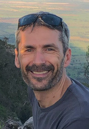
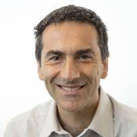

Plenary 1 (Virtual): Challenges in Deploying Robust Autonomy for Robotic Exploration in Marine Environments
19th September, 8:45 SGT
Abstract: This talk will describe insights gained from over a decade of autonomous marine systems development at the University of Sydney’s Australian Centre for Field Robotics. Over the course of this time, we have developed and deployed numerous underwater vehicles and imaging platforms in support of applications in engineering science, marine ecology, archaeology and geoscience. We have operated an Australia-wide benthic observing program designed to deliver precisely navigated, repeat imagery of the seafloor. This initiative makes extensive use of Autonomous Underwater Vehicles (AUVs) to collect high-resolution stereo imagery, multibeam sonar and water column measurements on an annual or semi-annual basis at sites around Australia, spanning the full latitudinal range of the continent from tropical reefs in the north to temperate regions in the south. The program has been very successful over the past decade, collecting millions of images of the seafloor around Australia and making these available to the scientific community through online data portals. These observations are providing important insights into the dynamics of key ecological sites and their responses to changes in oceanographic conditions through time. We have also contributed to expeditions to document coral bleaching, cyclone recovery, submerged neolithic settlement sites, ancient shipwrecks, methane seeps and deepwater hydrothermal vents. The talk will also consider some of our more recent work focused on developing automated tools for working with this imagery and illustrate how this is being used to inform further exploration work using these platforms.
About the speaker: Stefan Williams is the Director of the Digital Sciences Initiative at the University of Sydney and Professor of Marine Robotics at the Australian Centre for Field Robotics. He leads the Marine Systems group within the ACFR and is the head of Australia’s Integrated Marine Observing System Autonomous Underwater Vehicle Facility. His research interests focus on aspects of navigation, mapping, planning and control as applied to autonomous marine systems and the interpretation of the data collected by these systems. He has always had a strong focus on fielding real systems in support of scientific applications.

Plenary 2 (Virtual): Learning-based Design and Control of Underwater Robots
20th September, 8:45 SGT
Abstract: The digitization of practically everything coupled with advances in machine learning, and advanced robotics promises a future with democratized use of machines and wide-spread use of AI and robots. While the last 60 years have defined the field of industrial robots and empowered hard bodied robots to execute complex assembly tasks in constrained industrial settings, the next 60 years could be ushering in our time with pervasive robots that come in a diversity of forms and materials, extending our reach into far-away worlds in novel ways. In this talk I will discuss recent developments in underwater robotics, focusing on (1) computational co-design of underwater robots and (2) new machine learning models that can run online on edge devices, enabling underwater learning-based perception and control underwater.
About the speaker: Daniela Rus is the Andrew (1956) and Erna Viterbi Professor of Electrical Engineering and Computer Science, Director of the Computer Science and Artificial Intelligence Laboratory (CSAIL) at MIT, and Deputy Dean of Research in the Schwarzman College of Computing at MIT. Rus' research interests are in robotics and artificial intelligence. The key focus of her research is to develop the science and engineering of autonomy. Rus is a MacArthur Fellow, a fellow of ACM, AAAI and IEEE, a member of the National Academy of Engineering, and of the American Academy of Arts and Sciences. She is a senior visiting fellow at MITRE Corporation. She is the recipient of the Engelberger Award for robotics and the IEEE RAS Pioneer award. She earned her PhD in Computer Science from Cornell University.

Plenary 3 (Virtual): Marine robotics challenges and applications - Current research at the Italian center ISME
21st September, 11:45 SGT
Abstract: This talk will present the Italian interuniversity center ISME, established in 1999. ISME is composed by 9 Universities and has its background mainly in Systems and Control Engineering, Applied Mechanics and Computer Science. The activities of the ISME researchers will be presented trough brief overviews of some current and recent projects funded by National calls, the Italian Defense and the European Union. Topics will cover, among the others, underwater intervention, multiple vehicles coordination for geophysical applications, asset surveillance.
About the speaker: Gianluca Antonelli is Full Professor at the ``University of Cassino and Southern Lazio'', Italy and IEEE Fellow since 2021. His research interests include marine and industrial robotics, multi-agent systems, identification. He has published more than 50 international journal papers and 130 conference papers, he is author of the book ``Underwater Robots'' (Springer, 2003, 2006, 2014, 2018) and co-authored the chapter ``Underwater Robotics'' for the Springer Handbook of Robotics, (Springer, 2008, 2016). From 2016 to 2021 he has been member elected of the "IEEE Robotics & Automation Society" (RAS) Administrative Committee, he has been coordinator of the EuRobotics Topic Group in Marine Robotics, he has been secretary of the IEEE-Italy section, he has been chair of the IEEE RAS Italian Chapter, he has been Chair of the IEEE RAS Technical Committee in Marine Robotics. He served in the Editorial Board of the IEEE Transactions on Robotics, IEEE Transactions on Control Systems Technology, Springer Journal of Intelligent Service Robotics. In October 2021 and 2020, he was top 1% in the field "Industrial Engineering & Automation" according to common metrics and the SCOPUS database.